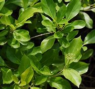

Basonym of Drug
Agnimantha
Main Synonym
- Ganikarika
- Jaya
- Jayanti
- Shriparna
Regional Name
- Bengali: Ganiyari, Arani, Goniari
- Gujarati: Arani, Aranimula, Arni
- Hindi: Urni
- Kannada: Taggi, Taggi Beru
- Malayalam: Munja
- Marathi: Takalimula
- Oriya: Ganiary
- Tamil: Tazhutazhai
- Telugu: Taluki
Botanical Name
Clerodendrum phlomidis Linn
Family
Verbenaceae
Classification (Gana)
- As per Acharya Charaka: Sothahara, Shitaprashaman, Anuvasanopaga
- As per Acharya Sushruta: Bruhat Panchamoola, Virtarvaadi, Varunadi, Vatasamsamana
External Morphology
A large shrub or small tree up to 9 m in height
Useful Parts
Important Phytoconstituent
Rasa Panchak
- Rasa: Katu, Tikta
- Guna: Laghu, Ruksha
- Virya: Ushna
- Vipaka: Katu
Action
Kaphavatahar, Sothahar (Anti-Inflammatory)
Therapeutic Indication
- Sotha (Inflammation)
- Vataroga (Vata disorder)
- Vibandha (Constipation)
- Agnimandya (Low Digestive Fire)
- Mutrakriccha (Dysuria)
Therapeutic Uses
- In Odema - Its leaves are tied on the spot after warming them.
- In Puyameha (Urine Infection) - Root decoction is given twice a day.
- In Urticaria - Its root paste is given orally.
- To Remove Weakness After Fever - Leaves juice is given.
Dose
- Powder: 3-6 gm
- Leaf Juice: 10-20 ml
- Decoction: 50-100 ml
Formulations
- Dashmularishta
- Dashmula Kwath
- Agnimanthkashay
- Dhanvantara Ghrita
- Gorocanadi Vati
- Narayana Taila
Adverse Effect
Not Known